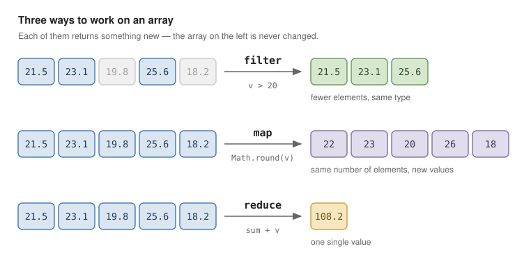

6 Arrays and Functions
Ask the AI tutor for this unit. It knows the chapters and exercises of this unit. You can ask in German or English.
Arrays and functions are the two things you will touch in every program from here on. The concepts will look familiar; the notation will not. And there is one habit to unlearn: in TypeScript you work on arrays with methods, not with loops. Anything you would write as a loop with an if inside has a shorter, clearer form here.
6.1 Arrays
const names: string[] = ["Ada", "Grace", "Linus"];
const counts: Array<number> = [1, 2, 3]; // identical, rarely usedArrays are not fixed size and not typed at runtime:
names.push("Alan");
console.log(names.length); // 4const protects the binding, not the contents. You cannot point the name at a different array, but you can still change the array it points at:
const list = [1, 2];
list.push(3); // allowed
list = [4, 5]; // compile error6.1.1 Useful basics
const first = names[0];
const last = names.at(-1); // undefined if empty
const exists = names.includes("Ada");
const index = names.indexOf("Grace"); // -1 if not found
const part = names.slice(1, 3); // copy, original untouched:warning:
names[99]isundefinedat runtime, but TypeScript types it asstring. This is a known hole in the type system. Be careful with indexed access.
6.1.2 Spread and destructuring
const more = [...names, "Barbara"]; // copy plus one element
const merged = [...names, ...counts.map(String)];
const [head, ...tail] = names; // head: string, tail: string[]
const { name, age } = user; // object destructuringThe spread operator is the normal way to copy an array or object instead of mutating it.
6.1.3 Tuples
A fixed-length array with a type per position, useful when a function has to return two values at once:
type Entry = [key: string, value: number];
const entry: Entry = ["temperature", 21.5];
const [key, value] = entry;6.2 Functions
function add(a: number, b: number): number {
return a + b;
}Optional and default parameters:
function greet(name: string, greeting: string = "Hello", loud?: boolean): string {
const text = `${greeting}, ${name}!`;
return loud ? text.toUpperCase() : text;
}There is no method overloading: a function name exists exactly once, and a second declaration replaces the first. Use optional parameters, or a union type for the parameter, when you need to accept more than one shape of input.
6.2.1 Functions are values
A function is a value like any other: it can be stored in a variable, passed as an argument and returned from another function. The type of a function is written as its parameter list plus => plus its return type.
type Formatter = (value: number) => string;
const asEuro: Formatter = (value) => `${value.toFixed(2)} €`;6.2.2 Arrow functions
const double = (x: number): number => x * 2; // expression body, implicit return
const log = (msg: string): void => { // block body, explicit return
console.log(msg);
};Use arrow functions for everything you pass to an array method — that is what they are for.
6.3 The array methods
Three methods do most of the work. They differ in how many elements come out:

The rest of the table is variations on those three. All of these methods take a function as an argument (higher-order functions) and none of them modify the original array — they return a new one.
| You want | TypeScript | Result |
|---|---|---|
| keep only some elements | filter(x => …) |
fewer elements, same type |
| turn every element into something else | map(x => …) |
same count, different type |
| boil the array down to one value | reduce(…) |
a single value |
| find out whether any element fits | some(x => …) |
boolean |
| find out whether all elements fit | every(x => …) |
boolean |
| get the first matching element | find(x => …) |
element or undefined |
| count the matching elements | filter(x => …).length |
number |
| sort | toSorted((a, b) => …) |
a sorted copy |
| sum | reduce((sum, x) => sum + x, 0) |
number |
| copy the array | [...source] |
a new array |
| index the elements by a key | new Map(source.map(x => [key, x])) |
Map<K, V> |
| group the elements by a key | reduce into a Map (see below) |
Map<K, V[]> |
The three that matter most are filter, map and reduce. Almost everything else is a special case of one of them.
const readings = [
{ sensor: "outdoor", value: 21.5 },
{ sensor: "indoor", value: 23.1 },
{ sensor: "outdoor", value: 19.8 },
];
const outdoor = readings.filter((r) => r.sensor === "outdoor");
const values = readings.map((r) => r.value);
const total = values.reduce((sum, v) => sum + v, 0);
const average = total / values.length;
const warmest = readings.toSorted((a, b) => b.value - a.value)[0];Note what find does when nothing matches: it returns undefined rather than throwing, and strict mode then forces you to handle that case before you can use the value.
6.3.1 Sorting
sort compares as strings by default — [10, 9, 1].sort() gives [1, 10, 9]. Always pass a comparator:
numbers.toSorted((a, b) => a - b); // ascending numbers
people.toSorted((a, b) => a.name.localeCompare(b.name)); // by nametoSorted returns a copy; the older sort sorts in place. Prefer toSorted, and the same for toReversed.
6.3.2 Grouping with Map
There is no ready-made method for grouping. The idiom is a reduce that builds up a Map, where each key holds the array of everything that belongs to it:
const bySensor = readings.reduce((map, r) => {
const group = map.get(r.sensor) ?? [];
group.push(r);
return map.set(r.sensor, group);
}, new Map<string, typeof readings>());A Map stores key/value pairs: get, set, has, delete, size, and it is iterable with for (const [key, value] of map). Prefer it over a plain object whenever the keys are data rather than fixed property names.
6.3.3 Chaining
const report = readings
.filter((r) => r.value > 20)
.map((r) => `${r.sensor}: ${r.value.toFixed(1)} °C`)
.join(", ");Each step produces a new array. That is fine for the data sizes in this unit and much easier to read than a loop.
6.4 Loops
Still available where they are genuinely clearer:
for (const name of names) { … } // the VALUES - this is the one you want
for (const key in someObject) { … } // the KEYS - rarely what you want
names.forEach((name, index) => { … }); // no break, no returnUse for…of. Use for…in almost never.
6.5 Two operators worth knowing
const port = config.port ?? 3000; // null/undefined coalescing
const city = user?.address?.city; // optional chaining -> undefined instead of a crash?? reacts only to null and undefined, unlike || which also reacts to 0 and "" — a classic source of bugs.